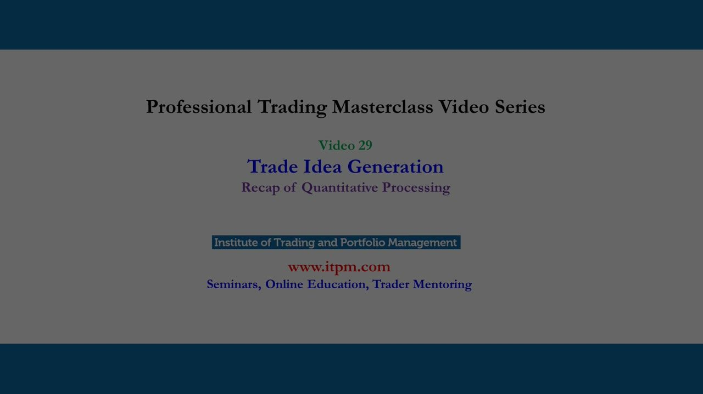
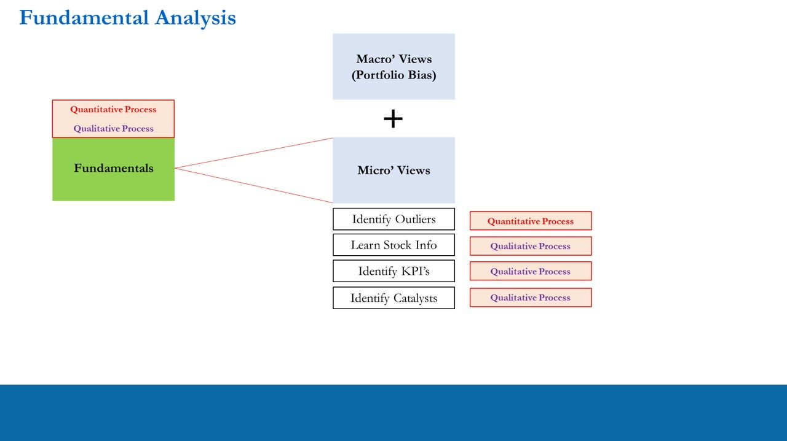
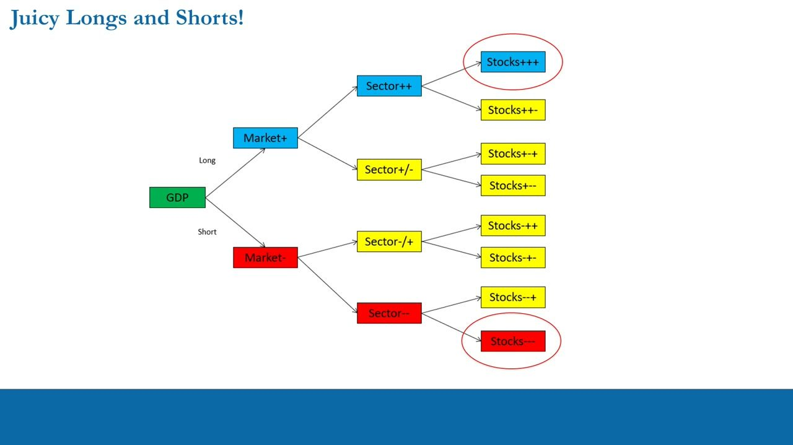
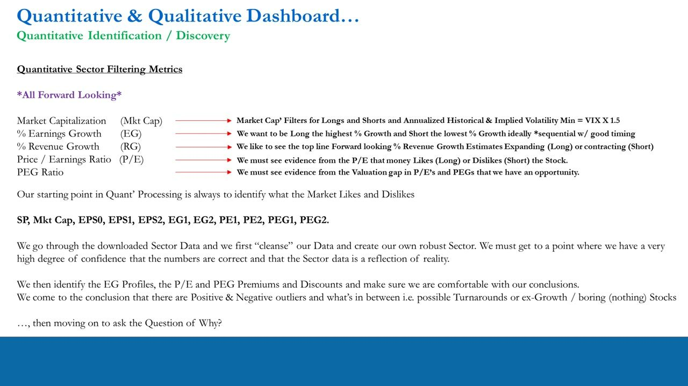
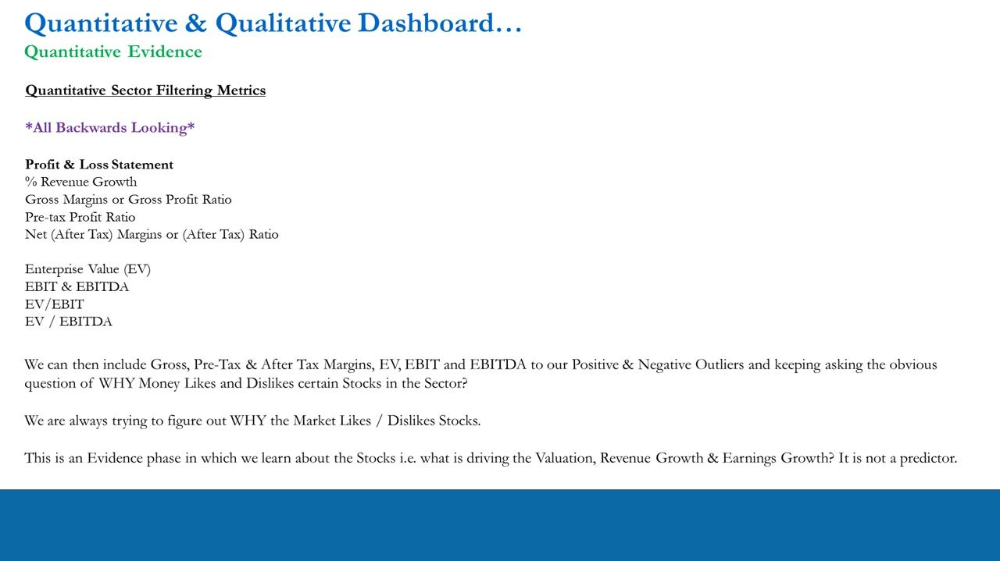
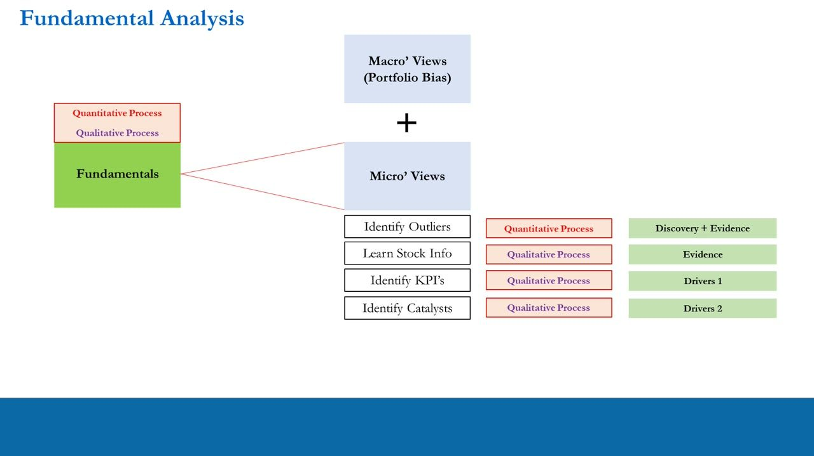
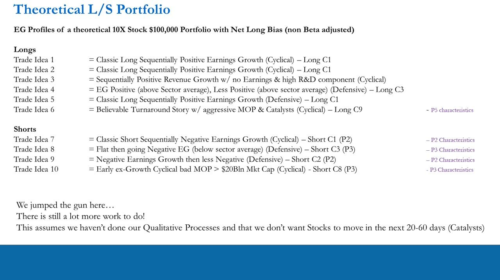
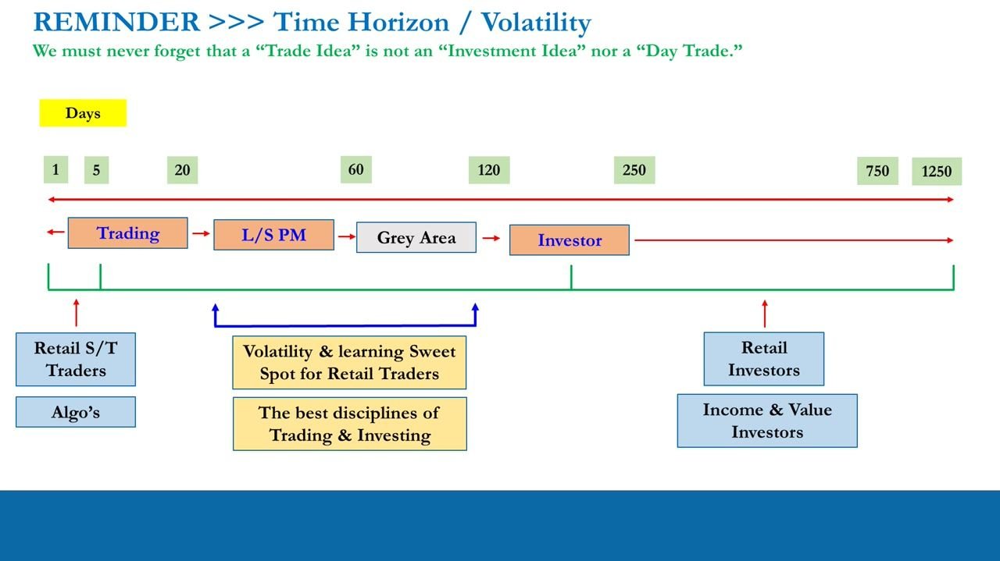

Recap of Quantitative Processing
The capstone of the trade-idea quant block (L22-28): the unified Micro dashboard, the fixed Discovery -> Evidence -> Drivers order, and the GDP -> Market -> Sector -> Stock funnel that finds juicy longs and shorts
The quant phase of trade-idea generation, tied up in one page: start at the macro to set portfolio bias, then run the forward-looking Micro dashboard (Mkt Cap + Implied-Vol >= VIX x 1.5, EG, RG, P/E, PEG) to DISCOVER positive and negative outliers, add the backwards-looking financial-statement ratios as EVIDENCE of why money likes or dislikes them -- and remember it is only half a trade idea until the qualitative work (KPIs + catalysts) is done.
The gist
- TOP-DOWN FIRST: always start with fundamentals at the macro level -- update leading indicators monthly to forecast GDP growth (US + international), correlate to stock-market direction, and read off your directional portfolio bias (Long / Short / Neutral) AND the characteristics of longs/shorts the environment favours. Only then drop to the micro / bottom-up level for individual stocks.
- THE UNIFIED MICRO DASHBOARD is the one page that ties the whole L22-28 quant block together. FORWARD-LOOKING (Discovery / identification): Market Cap, % Earnings Growth, % Revenue Growth, Forward P/E, Forward PEG. BACKWARDS-LOOKING (Evidence): EV, EBIT & EBITDA, EV/EBIT, EV/EBITDA, plus the P&L / Balance-Sheet / P&L+BS-combo / Cash-Flow ratios. Then Qualitative KPIs (backwards AND forwards).
- THE ORDER IS FIXED, never skip it: Forward-Looking Quant DISCOVERY first -> Backwards-Looking Quant EVIDENCE second -> then Forward Qualitative DRIVERS. Forward metrics IDENTIFY the positive/negative outliers; backwards metrics tell you WHY they exist (evidence, not a predictor -- it is backwards-looking info that potentially confirms forward estimates).
- GO WHERE THE JUICE IS: funnel from GDP down -- US market (approx 2,200+ stocks) -> Industry Sectors (Cyclicals & Defensives) -> Stocks (Growth, ex-Growth & Value). Long the positive outliers that outperform sector AND market in any GDP environment; Short the negative outliers that underperform both. The circled endpoints (Stocks+++ long, Stocks--- short) are the juiciest.
- IMPLIED VOLATILITY MIN = VIX x 1.5. On the Market-Cap row, apply cap filters for longs/shorts and check annualized historical & implied vol -- you want roughly >= 1.5x the S&P 500 VIX so you get the opportunity AND risk you choose to accept. The cap filters put you in the right ballpark, but always double-check.
- A COMPLETE trade idea needs BOTH the quantitative AND the qualitative assessment. Quant discovery + evidence still is not even a trade idea yet -- never turn a high-P/E, high-EG screen hit into a position. You must know what is driving the numbers (KPIs) and what catalyst will move the needle inside the 20-60 day horizon. Statistical significance arrives over 100-150 trades / 12-18 months.
Where we are: the end of the quant phase
- This closes a major part of the PTM series -- the QUANTITATIVE PROCESSING phase of trade-idea generation -- before heading into the qualitative processing phase next.
- What the block covered: interpretation of valuation & growth metrics; the mechanics of LONG trade-idea processing; the mechanics of SHORT idea processing; the opportunities in NON-IDEAL earnings-growth profiles; turnarounds and value traps; and how to process data correctly in the quant phase while avoiding the common mistakes.
A pure consolidation chapter -- no new metrics. It ties the L22-28 quant material into one flow and flags that the qualitative half of the trade idea is still owed.

Start top-down: macro sets the portfolio bias
- The systematic process always starts with fundamentals AT THE MACRO LEVEL. Cover leading indicators in the US and internationally to predict GDP growth, then forecast stock-market direction and returns via correlation.
- Why: to fix your directional portfolio bias -- Long, Short or Neutral/Flat -- and to get clues on the CHARACTERISTICS of longs/shorts the current and forthcoming macro environment favours.
- Run the macro process MONTHLY: update leading indicators, re-interpret the bias, and watch for stresses in the economy / financial markets that would make you change your mind and change your bias.
- Understand the macro environment first (top-down) and you build portfolios with the best chance of making money in the environment you are actually in.
The recap re-anchors the whole quant phase inside the systematic framework: macro fundamentals decide bias first, then you drop to the micro / bottom-up stock level.
Fundamental analysis: the two processes, four micro steps
- Fundamental analysis has TWO parts: the QUANTITATIVE process and the QUALITATIVE process. Under Fundamentals sit Macro Views (portfolio bias) + Micro Views.
- Under Micro Views, four steps: Identify Outliers (Quantitative Process); Learn Stock Info (Qualitative Process); Identify KPIs (Qualitative Process); Identify Catalysts (Qualitative Process).
- So far the series has completed only the quantitative half -- macro views for bias, plus quantitative in the micro context to identify outliers (with backwards-looking quant supplying evidence).
- Fundamentals do 80-90% of the regular work and always come FIRST; everything else comes after. (The series assumes stock positions, so trade structure is set aside here.)
The identify/learn/KPIs/catalysts map shows exactly how far the course has come: only 'Identify Outliers' is done. The next three steps are the qualitative phase that follows.

Go where the juice is: the GDP -> Market -> Sector -> Stock funnel
- The opportunity set: the US stock market (approx 2,200+ stocks) -> Industry Sectors (Cyclicals & Defensives) -> Stocks (Growth, ex-Growth & Value). Always get the most juice out of the squeeze.
- Juicy Longs & Shorts decision tree from GDP: LONG side -> Market+ -> Sector++ -> Stocks+++ (circled -- the juicy long) / Stocks++-; and Sector+/- -> Stocks+-+ / Stocks+--.
- SHORT side -> Market- -> Sector-/+ -> Stocks-++ / Stocks-+-; and Sector-- -> Stocks--+ / Stocks--- (circled -- the juicy short).
- Aim: be Long positive outliers that OUTPERFORM sector AND market in any GDP-growth environment; be Short negative outliers that go down and UNDERPERFORM both sector and market in any GDP environment.
The juice funnel is the geometry behind stock selection: stack the odds by picking outliers whose sector and market direction agree with the GDP-driven bias, so both the sector and the market work for you.

Forward-looking DISCOVERY: the identification block
- Discovery uses the FORWARD-LOOKING sector-filtering metrics to identify positive & negative outliers. Starting point is ALWAYS to identify what the market Likes and Dislikes.
- Market Capitalization -> apply Mkt-Cap filters for longs/shorts AND check annualized historical & implied volatility, with Implied Volatility Min = VIX x 1.5.
- % Earnings Growth (EG) -> be Long the highest % growth, Short the lowest % growth, ideally SEQUENTIAL with good timing (accept non-ideal profiles as next-best, or look in another sector).
- % Revenue Growth (RG) -> want the top-line forward-looking estimates EXPANDING (Long) or CONTRACTING (Short).
- Forward P/E -> must see evidence the P/E shows money LIKES (Long) or DISLIKES (Short) the stock -- rather have the market on your side. Forward PEG -> must see evidence from the valuation gap in P/Es and PEGs that there is a real opportunity.
- The 11 standard columns: SP, Mkt Cap, EPS0, EPS1, EPS2, EG1, EG2, PE1, PE2, PEG1, PEG2. Download the sector data, CLEANSE it and build your own robust sector until you are confident the numbers reflect reality, then read off EG profiles + P/E and PEG premiums/discounts.
- Conclusion of discovery: there are positive outliers, negative outliers, and in-between names -- possible Turnarounds or ex-Growth / boring 'nothing' stocks. Then move on to ask WHY.
The forward P/E and PEG reads are a trader's, not an accountant's: P/E confirms which side the market's money is on; the PE2-minus-PE1 (and PEG2-minus-PEG1) gap gives a rough price target for the next period. For negative-EG shorts the PEG is unreliable and read lightly.

Backwards-looking EVIDENCE: prove the WHY
- Now move from identification to the EVIDENCE phase -- backwards-looking quant that explains WHY money likes/dislikes each outlier. It learns about the stock (what drives valuation, revenue growth, earnings growth); it is NOT a predictor.
- Most-obvious evidence first, off the Profit & Loss Statement: % Revenue Growth, Gross Margins / Gross Profit Ratio, Pre-tax Profit Ratio, Net (After-Tax) Margins / After-Tax Ratio.
- Plus the valuation-evidence quartet: Enterprise Value (EV), EBIT & EBITDA, EV/EBIT, EV/EBITDA.
- Then the Other Quantitative Metrics (all backwards-looking): Balance Sheet -- Debt-to-Equity, Interest Coverage, Current, Quick, Working-Capital-over-Total-Assets, Book Value Per Share; P/L + BS Combos -- Sales-to-Assets, Return on Assets, Return on Equity (ROE); Cash Flow -- Free Cash Flow Yield.
- The B/S and B/S-P/L combo analysis was taught in the context of Turnarounds / ex-Growth names / possible Value Traps -- but 'they can all be used in your regular analysis when doing deep dives on Classic Longs & Shorts. Use them!'
Evidence is backwards-looking information that potentially CONFIRMS your forward-looking estimates -- never treat it as a forecast. Its job is to build conviction on why the outlier trades where it does.

The evolution: Discovery -> Evidence -> Drivers
- Always follow the process in this fixed order: Forward-Looking Quant identification/discovery FIRST, Backwards-Looking Quant evidence SECOND, then Forward Qualitative.
- Visual evolution: Quant DISCOVERY (forward-looking valuation) -> Quant EVIDENCE (backwards-looking financial statements) -> Qual DRIVERS (backwards & forwards KPIs + MOP / management operating plan).
- Mapped onto the four Micro-View steps: Identify Outliers = Quantitative, Discovery + Evidence; Learn Stock Info = Qualitative, Evidence; Identify KPIs = Qualitative, Drivers 1; Identify Catalysts = Qualitative, Drivers 2.
- The two processes OVERLAP: backwards-looking accounting metrics are quantitative work, but because they are backwards-looking they also supply evidence for forward valuation; learning stock info is qualitative but is also evidence work.
Discovery finds the outlier, Evidence proves why it exists, Drivers explain what will move it. KPIs are the drivers behind revenue and earnings; catalysts are what will drive the stock and its valuation -- both come in the qualitative phase next.

The theoretical 10-idea $100k L/S book (jumping the gun)
- A theoretical 10-stock, $100,000 portfolio with a NET LONG BIAS (non-Beta-adjusted), built PURELY on EG profiles -- 6 longs / 4 shorts.
- Longs: TI1 & TI2 = Classic Long sequentially-positive EG (Cyclical) - Long C1; TI3 = sequentially-positive Revenue Growth with no earnings & high R&D (Cyclical); TI4 = EG positive above sector avg, less positive (Defensive) - Long C3; TI5 = Classic Long sequentially-positive EG (Defensive) - Long C1; TI6 = believable Turnaround with aggressive MOP & Catalysts (Cyclical) - Long C9, P5 characteristics.
- Shorts: TI7 = Classic Short sequentially-negative EG (Cyclical) - Short C1 (P2); TI8 = flat then going negative EG below sector avg (Defensive) - Short C3 (P3); TI9 = negative EG then less negative (Defensive) - Short C2 (P2); TI10 = early ex-Growth Cyclical, bad MOP, > $20 Bln Mkt Cap (Cyclical) - Short C8 (P3).
- Big caveat, on the slide: 'We jumped the gun here -- there is still a lot more work to do.' It assumes NO qualitative work is done and that the stocks do NOT need to move in the next 20-60 days (i.e. no catalysts). In reality you would NEVER build a book on EG profiles alone.
The book is a teaching straw-man: it shows the C-code / phase vocabulary applied end-to-end, then deliberately knocks it down to prove the point -- a portfolio built on quant screens alone, with no drivers or catalysts, is not a real portfolio yet.

Time-horizon reminder: a trade idea is not an investment
- A 'Trade Idea' is NOT an 'Investment Idea' nor a 'Day Trade.' Days axis: 1 . 5 . 20 . 60 . 120 . 250 . 750 . 1250.
- Segments: Trading -> L/S PM -> Grey Area -> Investor. Trading (approx 1-5 days) = retail short-term traders & algos; Investor (approx 250+ days) = retail / income / value investors.
- The L/S PM -> Grey Area zone (approx 20-120 days) is the volatility & learning SWEET SPOT for retail traders -- the best disciplines of trading AND investing. We are Long/Short PMs; we want to be right by 60 days out and never turn a trade idea into an investment.
- A complete trade idea = BOTH the quantitative AND the qualitative assessment done. Quant discovery + evidence is not even a trade idea yet -- you must still identify the drivers (KPIs) behind the numbers and the CATALYST that moves the needle inside 20-60 days.
- Idea quality is paramount, and it fits the Pro-Trader Systematic Framework where 80-90% of the work happens; statistical significance of your track record arrives over 100-150 trades / 12-18 months.
The closing discipline check: quant alone can produce a high-P/E, high-EG screen hit, but turning that into a position skips the qualitative drivers and catalysts. Without a catalyst inside the horizon there is no reason for the stock to move -- so it is not yet a trade.

Glossary
- Micro dashboard (Quant & Qualitative)The single consolidated checklist of every quant metric in the trade-idea phase, split into forward-looking Discovery metrics (Mkt Cap, EG, RG, P/E, PEG), backwards-looking Evidence ratios (EV/EBIT, EV/EBITDA, and the P&L / Balance-Sheet / combo / Cash-Flow ratios), plus the qualitative KPIs.
- Discovery -> Evidence -> DriversThe fixed order of the fundamental process: Forward-Looking Quant discovery (identify outliers) FIRST, Backwards-Looking Quant evidence (why they exist) SECOND, then Forward Qualitative drivers (KPIs + catalysts). Never skip a step.
- Implied Volatility Min = VIX x 1.5On the Mkt-Cap row, screen for stocks with annualized implied (and historical) volatility of roughly at least 1.5x the S&P 500 VIX, so you get the opportunity and risk you choose to accept. The cap filters put you in the ballpark; always double-check.
- Go where the juice isThe GDP -> Market -> Sector -> Stock funnel over approx 2,200+ US stocks: pick positive outliers that outperform sector AND market (juicy longs, Stocks+++) and negative outliers that underperform both (juicy shorts, Stocks---) in any GDP environment.
- Positive / negative outliersThe stocks a forward-looking screen flags as the strongest (long candidates) and weakest (short candidates) in a cleansed sector, read off EG profiles and P/E & PEG premiums/discounts; in between sit turnarounds, ex-growth and boring 'nothing' names.
- Evidence phaseThe backwards-looking quant step that LEARNS why money likes/dislikes an outlier (what drives valuation, revenue and earnings growth). It confirms forward estimates -- it is not a predictor.
- Complete trade ideaAn idea is only a trade idea once BOTH the quantitative and the qualitative assessment are done -- including the drivers (KPIs) behind the numbers and a catalyst that moves the stock within the 20-60 day horizon. Quant screening alone is not a trade idea.
- 100-150 trades / 12-18 monthsThe sample size over which a trader's metrics / track record reach statistical significance in the Pro-Trader Systematic Framework.